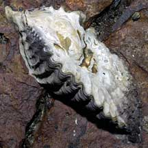
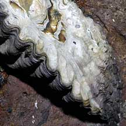
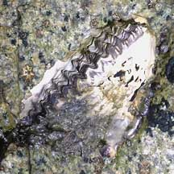
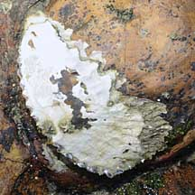

|
|
| bivalves text index | photo index |
| Phylum Mollusca > Class Bivalvia > Family Osteridae |
| Zig
zag oyster awaiting identification* Family Ostreidae updated May 2020 Where seen? This oyster with a zig-zag opening at the valves is sometimes seen on some of our shores, on boulders and seawalls. Usually a few are squished in cracks near the mid water mark. Features: 3-8cm. The two-part shell is thick and chalky. The opening between the valves is a regular fine zig-zag. The opening is usually well away from the rock surface. Some are crowded next to one another, others are found singly. Oysters are difficult to distinguish by shell shape alone and those on this page may in fact be different species that appear similar. |
|
 Raffles Lighthouse, Aug 06 |
 |
 Kusu Island, Jun 05 |
*Species are difficult to positively identify without close examination.
On this website, they are grouped by external features for convenience of display.
| Zig zag oysters on Singapore shores |
On wildsingapore
flickr
|
| Other sightings on Singapore shores |
 Pulau Biola, May 10 |